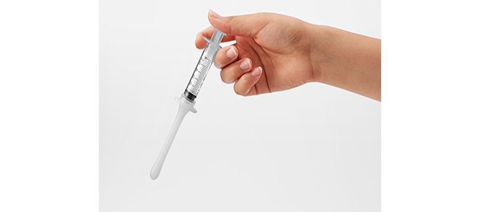

STORY
妊活のストレスを軽減するためのSeed inが、継続して使いたいと思われるものでなければ「サポート」とは言えません。試験と改良を重ねた結果、スッと簡単に挿入でき、膣内で注入しやすい現在のSeed inが完成しました。
仕事などで2人のタイミングが合わせづらい
義務的なセックスがつらい
膣内射精障害やEDで妊活がうまくいかず悩んでいる
「シリンジ法」という言葉を、聞いたことのない方も多いと思います。TENGAヘルスケアが、妊活中で人工授精や体外受精の経験がない男女を対象に認知度を調査したところ、約8割の方がシリンジ法について「名前も聞いたことがなかった」または、「名前は知っていたが詳しくは知らない」と回答しました。
妊活をサポートするアイテムとして、認知度はまだまだ低いことがわかります。 一方で、妊活中のセックスについての悩みや不満で一番多かったのは「疲れていたり忙しかったりしてできない、または面倒くさい」でした。
私たちは、妊活が必ずしもセックスによって行われるべきだとは思いません。適切な使い方によるカテーテルでの精液注入と、セックスによる射精では妊娠率に差はないと言われています。「タイミングが合わない日や、うまくいかないとき、疲れているときはシリンジ法でも妊活ができる」と知っているだけでも、気持ちが楽になるはず。
妊娠を望む多くのカップルに、Seed inの選択肢が増えることを願っています。
- HOW TO USE
-
01開封し、本体と採精容器を取り出します02付属の採精容器を広げて、精液を採取します03採取した精液をカテーテル先端の開口部から押子を引いて吸引します04横になった姿勢で腟にカテーテルを挿入し、精液を注入します。注入後は5分程度横になって安静にしてください
 05使用済みの採精容器と本体は包装袋に入れて封をし、廃棄してください
05使用済みの採精容器と本体は包装袋に入れて封をし、廃棄してください(※潤滑剤には精子の運動を妨げてしまうものがあるので使わないことをお勧めします)
ITEMS
Seed in 3個入り x 2セット 合計6本のセットです。
1本あたり1045円（税込）で3個セット単品よりも5%お得です。
他の商品ラインナップ
定期購入初回に、スマホで精子観察ができるキット「メンズルーペ」をプレゼント！
生理周期に合わせて配送頻度を選べます、〇か月縛りなどもございませんのでご安心ください。
Seed in 3個入り x 3セット 合計9本のセットです。
1本あたり990円（税込）で3個セット単品よりも10%お得です。

妊活について学ぶ

よくある質問
- Q.カテーテル挿入部分のサイズはどのくらいですか？
-
A.カテーテル先端からツバまでの長さは約8cm、先端の一番膨らんだ部分の直径は約1㎝です。
- Q.挿入時に、潤滑ゼリーやローションを使っても良いですか？
-
A.潤滑ゼリーの中には、精子の運動を妨げてしまうものがあります。使用しないことをお勧めします。
- Q.捨てる時はどうしたら良いですか？
-
A.外装袋に戻しチャックを閉じて、燃えるゴミとして廃棄してください（各自治体の指示に従って廃棄してください）。
- Q.一度使った物を洗って再使用しても良いですか？
-
A.衛生上の観点から、再使用はお止めください。
- Q.使用前に準備する事はありますか？
-
A.細菌の混入をなるべく防ぐため、男女ともに手洗い、できればシャワーを浴びてから、清潔な環境で実施される事をお勧めします。
- Q.何ヶ月間くらいを目安に使用すればいいですか？
-
A.6ヶ月間を目安に実施し、妊娠に至らなければ医療機関を受診してください（通常のタイミングをとってのセックスを1年続けても妊娠に至らない場合、不妊とされています）。35歳以上の方や、器質性の不妊の疑いがある場合は、上記に関わらず早めに医療機関に相談されることをお勧めします。
- Q.一周期で何日実施するのが良いですか？
-
A.排卵予定日5日前～排卵予定日1日後＝7日間に3回以上タイミングをとることを推奨しています。通常のセックスとSeed inを組み合わせ、なるべく多く実施してみましょう。まずは3日（1set）を目標に、余裕があれば2set実施してみましょう。
- Q.排卵日が良く分かりません。
-
A.排卵検査薬や、基礎体温測定、妊活アプリなどを活用してみてください。
- Q.受精する可能性があるのは、排卵日の前後何日ですか？
-
A.産婦人科学会によると、排卵日4日前～排卵日当日と言われています。ただし排卵日の特定は個人では難しいため、排卵予定日を割り出し、その前5日と後１日を含めた７日間に、できるだけ多くタイミングをとりましょう。
- Q.妊娠する可能性は、普通のセックスと変わらないですか？
-
A.通常のセックスとシリンジ法での妊娠確率については様々な報告がありますが、妊娠率に大きな差はありません。シリンジ法を活用し、タイミングをとる回数を増やすことで結果的に確率が上がることになります。
- Q.そもそも精子の状態を知りたいのですがどうしたら良いでしょうか？
-
A.精液検査をお勧めします。病院へ行きづらい、時間が取れないという方は、一度自宅でできる精子観察キットで確認してみましょう。
- Q.射精直後の精液を使わないとダメでしょうか？射精後何時間以内の精液なら大丈夫ですか？
-
A.できるだけ早い方が良いですが、難しい場合は2時間以内を目安に注入してください。
- Q.採取する精液は、数日間禁欲（射精を控える）した方が良いですか？
-
A.禁欲は不要です。期間中はなるべく毎日おこなってください（普段から精液量が少ない方の場合、初日の注入のみ、2日間程度禁欲してから実施してみてください）。
- Q.採精容器の中の精液を、全量うまく吸えません。
-
A.禁欲は不要です。期間中はなるべく毎日おこなってください（普段から精液量が少ない方の場合、初日の注入のみ、2日間程度禁欲してから実施してみてください）。
- Q.精液が容器のあちこちに付いて吸いづらいのですが、どうしたら良いですか？
-
A.採精容器の隅に集めて吸ってください。粘度が高くうまく隅に集まらない場合は、15分～30分ほど精液を放置し液化させることで集めやすくなります。
- Q.挿入する時に痛みを感じます。
-
A.カテーテルの外側に、精液を付着させてみてください。ただし、痛みが強い場合は使用を中止してください。
- Q.精液注入時はどのような姿勢が良いでしょうか？
-
A.横になった姿勢であれば、どの様な姿勢でも大丈夫です。やり易い姿勢で注入してください。
- Q.途中までは問題ないのですが、奥まで入れると痛いです。奥に注入しないとダメでしょうか？
-
A.問題ありません。
- Q.精液注入後は、しばらく横になっていた方が良いですか？
-
A.5分程度横になって、安静にしてください。
- Q.本体を床に落として汚してしまいました。洗って使用しても大丈夫ですか？
-
A.衛生上の観点から、使用不可です。
- Q.注入後にカテーテル（管）の中に精液が残ってしまいます。
-
A.シリンジ内に少し空気を含ませた状態で注入してください。最後に空気を押し込むことによって、カテーテル内の精液も残らず注入されます。
- Q.途中までは問題ないのですが、奥まで入れると痛いです。奥に注入しないとダメでしょうか？
-
A.痛みを感じる場合はそれ以上奥には挿入せず、途中の位置で精液を注入して構いません。使用後も痛みが続く場合は、医療機関を受診してください。
- Q.採取できる精液量が少ないのですが、最低どれくらいあれば良いですか？
-
A.自然妊娠に必要な精液量のWHO（世界保健機関）基準は1.4mlです。この基準値は「自然妊娠するための最低限のライン」という意味になります。 この基準値以下や、基準値を少し超えた程度の精液所見では、自然妊娠する可能性は低いと考えられます。そのような場合、原因に応じた適切な対応が重要です。外陰部の視触診や超音波検査など、医師（できれば男性不妊の専門医）による精密検査を受け、精液所見が悪い原因を探しましょう。
【製品詳細】
- 製品名：Seed in(シード イン)
- 参考価格: 1本で1,430円、3本セットで3,300円(ともに税込)
- 一般的名称: 精液注入用子宮カテーテル
- 医療機器の分類: 一般医療機器(クラスⅠ)
- 材質: カテーテル：シリコーンゴム／シリンジ：ポリプロピレン
- 商品サイズ: （幅×奥行×高さ）132×25×220 mm 重量：24g(1本)
- 取扱場所: 公式オンラインストア、ほかWEBストア、一部医療機関、ドラッグストア